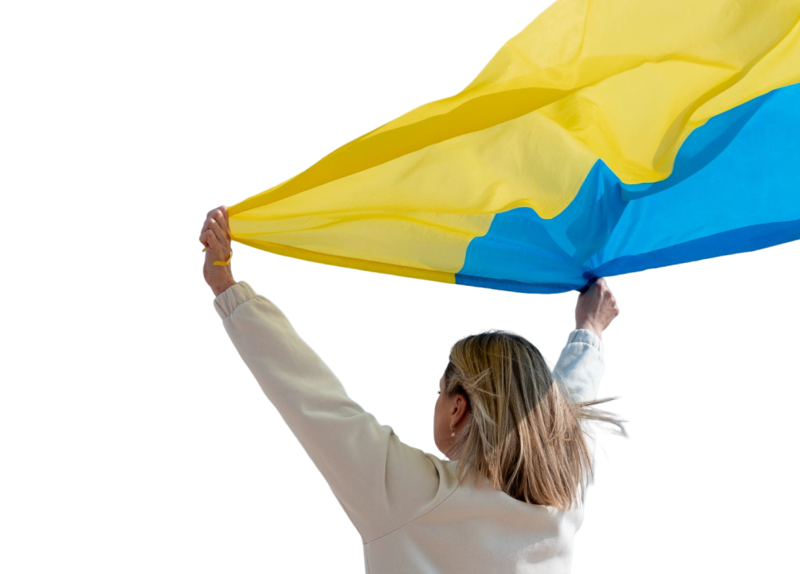
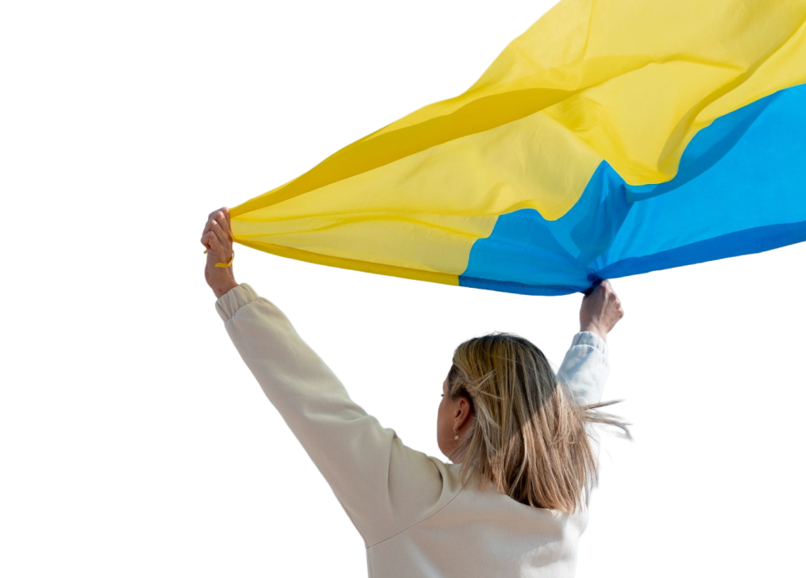

Фестиваль Перемоги України
Свято для усіх українців, які працювали, боролися й вірили у перемогу
Свято для усіх українців, які працювали, боролися й вірили у перемогу
3 сцени, щоб добре й із задоволенням провести час
Усі сцени розташовані так, щоб вам було зручно ходити між ними, і вони одна одну не глушили
Розбудова України після війни
Виступ Президента України
10:00-12:00Виступ представників ЄС
13:00-14:00Виступ представників НАТО
14:00-15:00Гімн України
21:25-21:30Артем Квасоваров
14:00-15:00Степан Мега
16:00-17:00Гурт “Протитіла”
17:00-18:00Гурт “Надвірна”
18:00-19:00Розбудова України після війни
Музей науки
14:00-15:00Майстер-клас з ліплення
16:00-17:00Майстер-клас з машинобудування
17:00-18:00Майстер-клас з роботехінки
18:00-19:00Кожен учасник фестивалю отримає прапор України та футболку з гербом
Фестиваль безкоштовний. Будемо збирати пожертви для відбудови зруйнованих українських міст та сіл.
Наша мета 10 000 000 гривень!
00|230|025